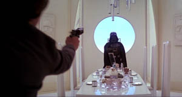
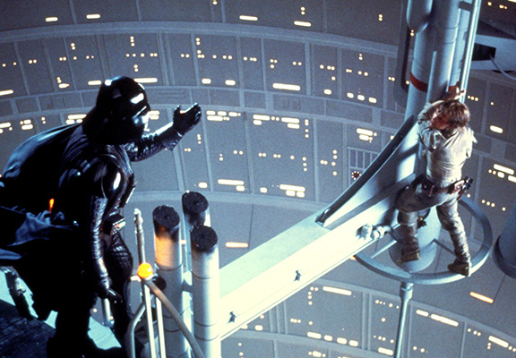

About
A long time ago, in a galaxy far, far away, the Galactic Empire reigned supreme over the galaxy, led by Sith Lord: Emperor Palpatine, with his apprentice Darth Vader by his side. Before the Galactic Empire assumed control of the galaxy, emperor Palpatine, also known as Sheev Palpatine, rose to power as a Senator in the Galactic Republic. He then was elected as Supreme Chancellor of the Galactic Senate. He then made what can only be described as a great leap forward by establishing the Galactic Empire in place of the Galactic Republic. The general public generally looks upon the Galactic Empire with a negative eye; however, this is only a result of propaganda from the Rebels. The Empire was in-fact able to bring order to the galaxy, whereas the Rebels fantasized over the previously in power Galactic Republic that had a corrupt, inefficient government that was unable to free Naboo from the grip of the Trade Federation. The American Imperial Faction sees through the Rebel propaganda and admires the effectiveness of the Galactic Empire in securing order in the galaxy.
"Execute Order 2020""Believe in Sheev"  
Un-biased Review from Independent Video-Maker
Main Policies
We model our policies after those that proved to be successful in making the Galactic Empire the bastion of galactic order that it quickly became upon assuming power.
Significant Reform of Governmental Structure
It's obvious that America's current system has tremendously failed at bringing order to the country. Inefficient decision-making and inaction on many issues is a result of the excessive checks and balances. Emperor Palpatine once understood the struggles that come with these more Democratically constructed systems as a Senator, and later Supreme Chancellor in the Galactic Senate. The Galactic Senate proved ineffective in bringing order to the galaxy, which is why Supreme Chancellor Palpatine drew the applause of the Senators of the Galatic Senate when he announced that he was now to become Emperor Palpatine of the Galactic Empire. This is why we support...
- The squandering of the ineffective Constitution as it squandered the Articles of Confederation before it
- The abolition of the judicial and legislative branches
- The reformation of the executive branch to follow the concept of the Rule of Two:
- The Rule of Two is the concept of the Sith that only two Sith Lords may exist at any time: One master, and one apprentice
- The executive branch will consist of one Emperor and an apprentice of the Emperor's choosing
- The Emperor and his apprentice may appoint bureaucrats and form bureaucratic organizations as they see fit
- This is the most efficient system for decision-making
- Any American citizen may replace the Emperor by defeating him or her in a duel, after which the new Emperor will appoint their apprentice and re-structure the bureaucratic system as they please
- A Unitary system will replace the current federalist system for further concentration of power and thus efficient decision-making
Emphasis on Elimination of Threats and Possible Threats
Emperor Palpatine always cunningly ensured that any terrorists were swiftly dealt with, including Separatist leaders such as Nute Gunray. Palpatine also carried out the purging of the dangerous Jedi Order via Order 66, and his apprentice, Darth Vader, proceeded to hunt down survivors of the massacre and any new possible threats, including Han Solo and Luke Skywalker. Bounty hunters such as IG-88, Bossk, and Boba Fett greatly advanced this cause. These proceedings most efficiently served to bring order to the galaxy. This is why we support...
Expansion of Military and Increased Benefits for Troopers
Palpatine utilized his troops effectively to establish law and order throughout the galaxy. This is why we support...
- An increase in military spending
- Quartering for troopers: Troopers deserve your respect and accomodation
- Higher wages for troopers
- Pensions for troopers
- Integration of a wider variety of combat vehicles into the military, including speeders, AT-ATs, and AT-STs
- Implementation of advertising campaigns for the military to be ingrained into the education system
Differences from Republicans and Democrats
Republicans (the political party, not to be confused with members of the Galactic Republic) and Democrats are ineffective parties that squabble over futile issues, failing to address blatant needs and solve obvious issues. Here is how we differ from them:
- Whereas Republicans and Democrats are happy to play their endless little political games with each other and engage in ideological battles and battles for seats in Congress, we will eliminate outside threats and construct a one-party system to avoid the impedement of governmental processes
- Whereas Republicans and Democrats hold primaries and caucuses to select the candidates for their parties, if a situation arises, in which both the Emperor and his apprentice were to resign or die, duels between Emperor hopefuls will occur in each region of the country, with electoral votes based on the population of the region in which the duel occurs being assigned for each win. The candidate with the highest number of electoral votes of all surviving candidates will become Emperor. Ties will be resolved by duel
Our Candidate
The candidate the American Imperialist Faction is running for President (who after our reforms will become Emperor) is our one and only member: Brandon Suen.
Skilled Dueler
Like Emperor Palpatine and Darth Vader, in order to establish order, citizens must know that their leader is worthy of office. This is why our candidate, Brandon Suen...
- Can do more push-ups than his little sister
- Is rated 100/100 strength in GTA
- Pushed somebody once after a basketball game because the dude would not shake his hand after the game
- Can bench a plate
- Is pretty okay at Super Smash Bros
Strong Willed
Like Emperor Palpatine and Darth Vader, a leader must be able to enforce what is best and impose his or her will on others. This is why our candidate, Brandon Suen...
- Broke away from those who now call themselves the 3RD Party upon their first signs of disobedience
- Intimidated Gov teacher into giving him extra credit on Third Party PSA (planned)
Works Well Under Pressure
A leader isn't a true leader if he or she cracks under pressure. Before becoming Emperor, Palpatine had the purple lightsaber of Mace Windu at his throat; however, Palpatine maintained his composure and was able to maneuver himself out of the tight situation, resulting in Windu's death instead of his own. This is why our candidate, Brandon Suen...
- Programmed this entire website from scratch the day before the due date of the project
Join the Cause
Enter your email below to join our cause. Note: Your email will not actually be saved and will be sent to a mock URL.